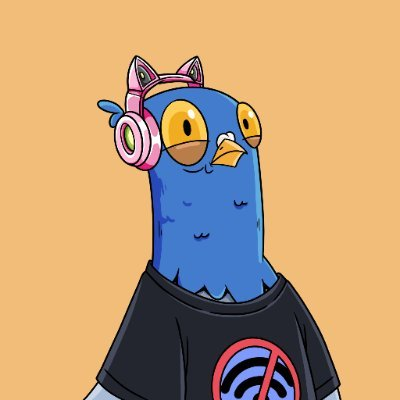
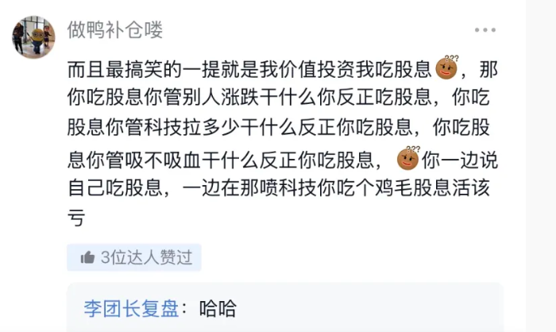

#1 · wufantouzi · 2026-06-21T05:53:55.000Z茅台1400-1500开始定投按照2-3年分红看现在是1300不到的成本按照1200价格算目前价格浮亏了10%很多人都骂我喊大家定投茅台但我喊茅台的时候算币圈的高点11-12万如果你确实在那个时候听我的卖掉btc配置茅台你只会少亏40%而且btc大家都是加杠杆买拿到现在基本都亏完了我身边也有不少兄弟因为买了茅台把钱存下来了也有没买茅台或者买了又卖掉在币圈亏完的另外我5-6年前喊卖掉茅台时茅台是70-100倍pe我1700-1800清仓茅台那些骂我的人绝口不提那也是一个机构抱团 白酒泡沫的时代和今天基金抱团冲一些概念也没差多少那时候我喊的是卖掉茅台买入科创和美股币圈午饭投资的微博有完整的历史记录投机和山岳一样古老没有什么新鲜事现在Ai确实万众瞩目 共识强烈比趋势和共识更强的是人性的欲望我相信没有什么这次不一样买在无人问津时卖在人声鼎沸处超额收益永远来自于市场定错价
 #3 · xuedingedegs · 2026-06-22T13:02:40.000Z很奇怪的一点，我关注的3个股票价值投资者，都没有投资AI，难道AI板块的股票是不符合价值投资者的选股标准，还是说漏看了
#11 · susanryanlin · 2026-06-21T09:33:18.000Z午饭你还是去吃晚饭吧，你非要跟市场反着来，非要跟大趋势反着来，你哪怕定投的钱拿点买存储你不早起飞了，还在那教人定投茅台，以后年轻人谁喝茅台，销量只会一降再降
#16 · Dreamedfly · 2026-06-21T07:37:51.000Z说个违反常识的，由于老登在下跌途中加了不少杠杆，所以现在老登是越跌越危险，而由于AI这些上涨使得融资占比越来越少，所以AI反而是越涨越安全。